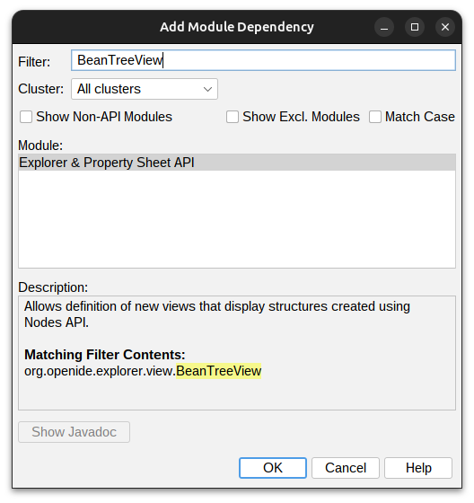
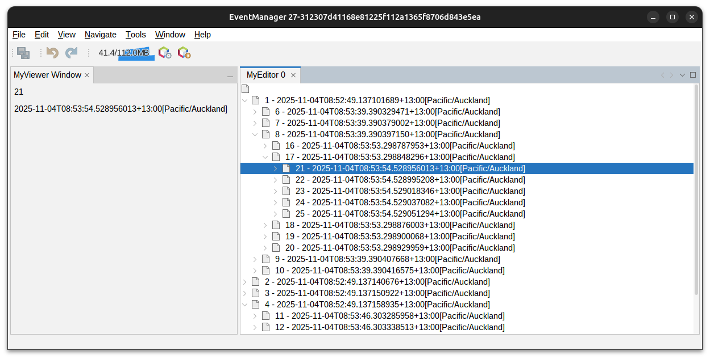
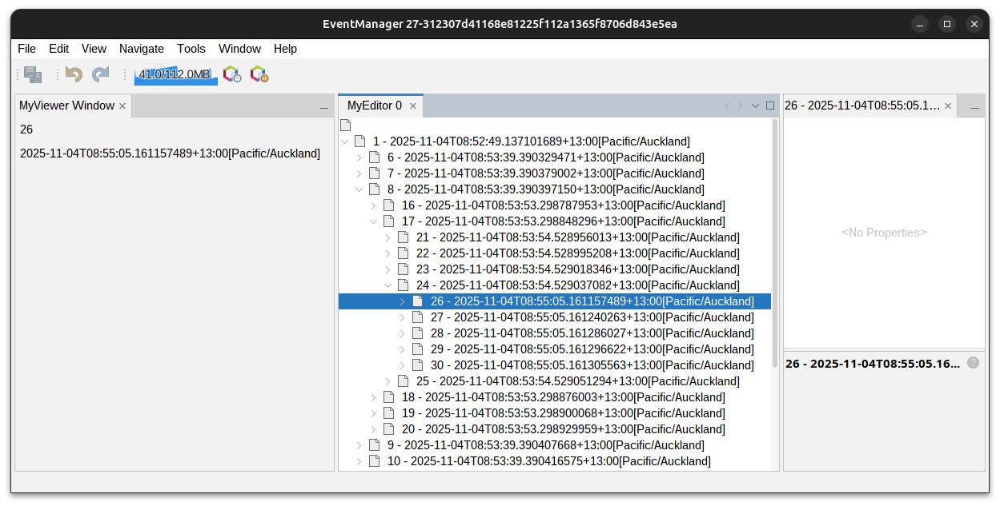
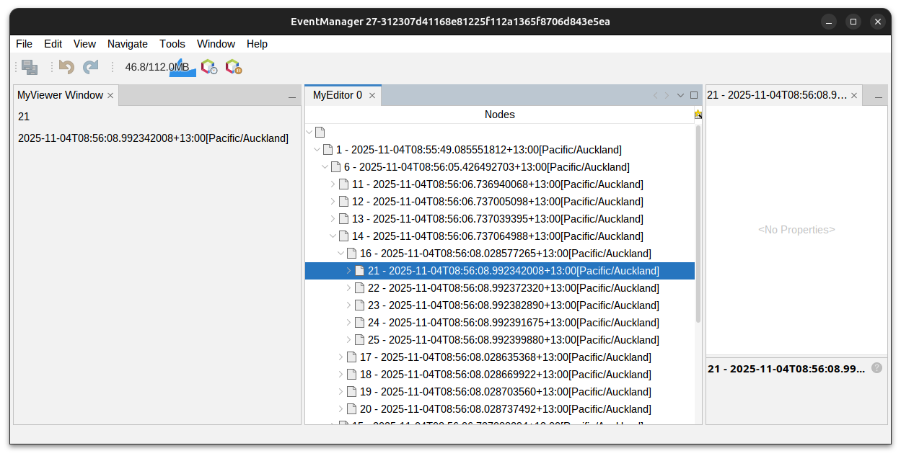
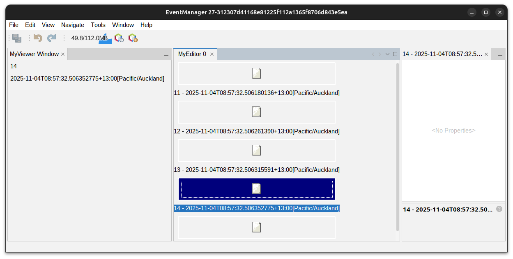
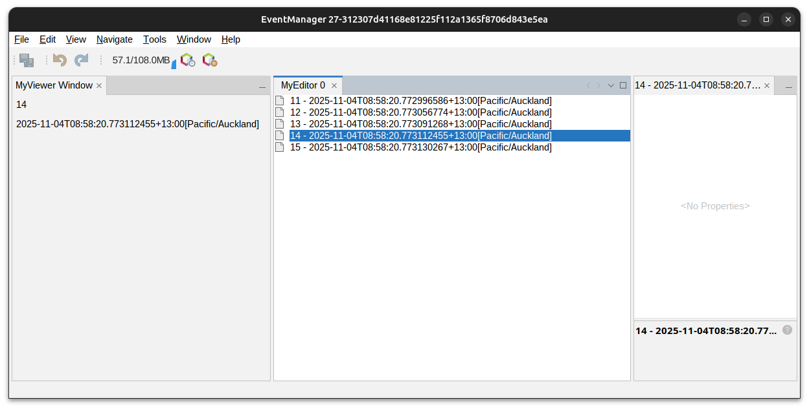
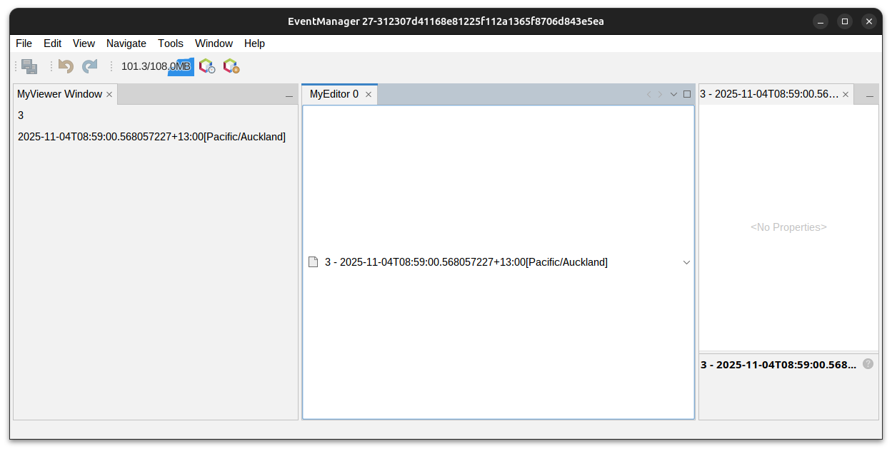
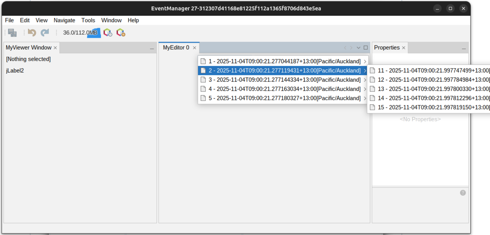
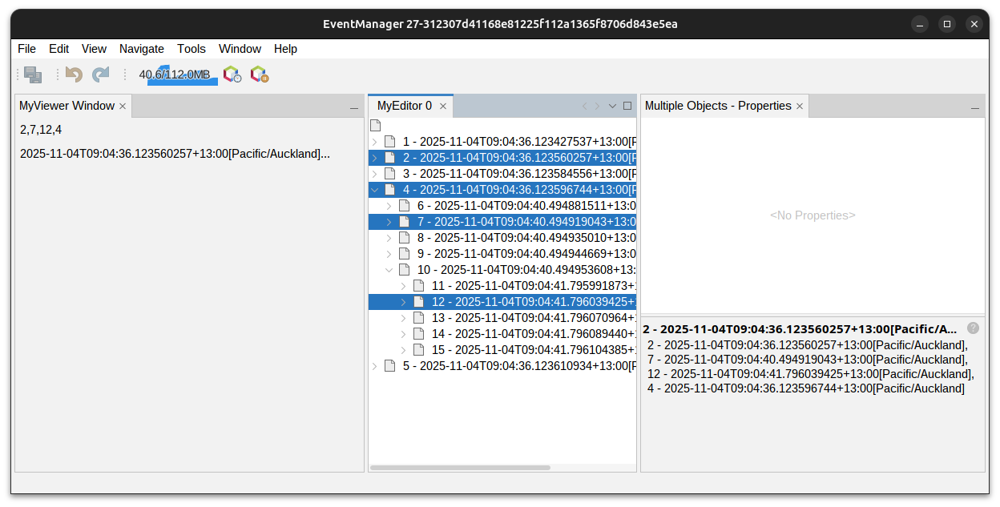

Apache NetBeans
Apache NetBeansLatest release
NetBeans Selection Management Tutorial II - Using Nodes
Last reviewed on 2025-11-04
Part 2 of the selection management series. It builds up on part 1, have its source code at hand as we will be modify it here.
This tutorial introduces the Nodes API
for granular selection management beyond component-level handling. While custom Lookup implementations are possible,
the Nodes API provides significant advantages with minimal code.
For troubleshooting, you can download the completed source for reference.
Introduction to the Nodes API
The Nodes API provides two key benefits:
The Presentation Layer decouples data models from UI components, enabling multiple view representations of the same data.
The Explorer API provides ready-made components (trees, lists, tree tables) that render Node hierarchies.
A Node is a generic hierarchical object with:
-
Children - Child nodes that can also be displayed
-
Actions - Context menu actions
-
Display Name - Localized display text
-
Icon - Visual representation
Nodes fire change events that automatically update Explorer UI components. They also have a getLookup() method that
can be proxied by the TopComponent displaying the node. The IDE’s Projects tab demonstrates this - it’s a
TopComponent that proxies selected nodes' Lookup objects, just like Utilities.actionsGlobalContext()
proxies focused components.
Explorer components handle this proxying automatically. Your existing MyViewer component from part 1 will respond
to Explorer selection changes without modification.
Creating an Explorer View
Modify the MyEditor module from part 1 to use the Explorer API.
-
Right-click My Editor project → Properties → Libraries → Add Dependency. Search for "BeanTreeView" and select
Explorer & Property Sheet API.
Click OK to add the dependency.
-
Open
MyEditorTopComponent.java, switch to form designer and delete all components (both text fields and button). -
Replace the constructor with:
public MyEditorTopComponent() { initComponents(); Event obj = new Event(); associateLookup(new AbstractLookup(content)); setLayout(new BorderLayout()); add(new BeanTreeView(), BorderLayout.CENTER); setDisplayName("MyEditor " + obj.getIndex()); }BeanTreeViewis a tree-based view with built-in popup menus and search. Press Ctrl+Shift+I to import it. -
Remove the unused
updateContent()method. -
Explorer components locate their data source by searching up the component hierarchy for an
ExplorerManager.Provider. Update the class signatureMyEditorTopComponentto implement that interface:public class MyEditorTopComponent extends TopComponent implements ExplorerManager.Provider {Use Alt+Enter to implement the required method:
private final ExplorerManager mgr = new ExplorerManager(); @Override public ExplorerManager getExplorerManager() { return mgr; } -
Add the following line to the constructor to set the root node:
mgr.setRootContext(new AbstractNode(Children.create(new EventChildFactory(), true)));The
trueparameter enables asynchronous child creation. -
Add the
Nodes APIdependency: Right-click My Editor project → Properties → Libraries → Add Dependency. Search for "AbstractNode" and selectNodes API. -
Press Ctrl+Shift+I to fix imports.
EventChildFactorydoes not existe yet, so it will show as unresolved - we’ll create it next.
Implementing Nodes and Node Children
AbstractNode is a utility implementation of Node that saves you from implementing the interface directly. It is
actually not an abstract class! You provide a Children object, set display properties, and get a working Node
without subclassing.
We now need to implement EventChildFactory, so that there are subnodes underneath the initial node:
-
Right-click the
org.myorg.myeditorpackage and use New > Java Class. Name the new class "EventChildFactory". -
Modify the signature of the class so it extends
ChildFactory:public class EventChildFactory extends ChildFactory<Event> {Press Ctrl+Shift+I to Fix Imports.
-
Position the cursor on the class signature and use Alt+Enter to implement abstract methods. This adds the
createKeysmethod where you’ll create keys for child nodes. The children are created lazily - only when the user expands the parent node in the view. Implement it as follows:@Override protected boolean createKeys(List<Event> list) { Event[] objs = new Event[5]; for (int i = 0; i < objs.length; i++) { objs[i] = new Event(); } list.addAll(Arrays.asList(objs)); return true; }ChildFactorycreates child nodes on-demand. For each key in the list,createNodeForKey()will be called. -
Now you need to implement the code that actually creates Node objects for all of these. Implement
createNodeForKeyas follows:@Override protected Node createNodeForKey(Event key) { Node result = new AbstractNode( Children.create(new EventChildFactory(), true), Lookups.singleton(key)); result.setDisplayName(key.toString()); return result; }Each
Nodegets theEventin itsLookup. When selected, thisLookupis proxied through theTopComponentto the global context, making theEventavailable to other components. -
Wire up the explorer manager to the TopComponent’s lookup. Delete this line from the class:
private final InstanceContent content = new InstanceContent(); -
Update the
MyEditorconstructor to:public MyEditor() { initComponents(); Event obj = new Event(); associateLookup(ExplorerUtils.createLookup(mgr, getActionMap())); setLayout(new BorderLayout()); add(new BeanTreeView(), BorderLayout.CENTER); setDisplayName("MyEditor " + obj.getIndex()); mgr.setRootContext(new AbstractNode(Children.create(new EventChildFactory(), true))); }ExplorerUtils.createLookup()automatically proxies the selected node’sLookup. Press Ctrl+Shift+I to fix the imports.
Running the Tutorial
Passing a new EventChildFactory to each AbstractNode creates an infinitely deep tree - each node has five children,
created on-demand when expanded.
Right-click `EventManager` → Clean and Build, then Run the application. You will be able to browse the Events:

Open the property sheet with Window → IDE Tools → Properties to see the viewer and property sheet update with
each selected node’s Event:

Exploring Explorer
Experiment with other Explorer components by replacing new BeanTreeView() in the MyEditor constructor with:
-
OutlineView - Tree-table with tree as leftmost column:

-
IconView - Icon-based layout similar to Windows Explorer:

-
ListView - Displays nodes in a
JList:
-
ChoiceView - Combo-box view (typically used with other components):

-
MenuView -
JButtonthat pops up a menu:
Handling Multi-Selection
BeanTreeView supports multi-selection. Update the viewer component to display all selected nodes:
-
Open
org.myorg.myviewer.MyViewerTopComponentin the editor. -
Replace the
resultChanged()method with:@Override public void resultChanged(LookupEvent lookupEvent) { Collection<? extends Event> allEvents = result.allInstances(); if (!allEvents.isEmpty()) { StringBuilder text1 = new StringBuilder(); StringBuilder text2 = new StringBuilder(); for (Iterator i = allEvents.iterator(); i.hasNext();) { Event o = (Event) i.next(); text1.append(o.getIndex()); text2.append(o.getDate().toString()); if (i.hasNext()) { text1.append(','); text2.append(','); } } jLabel1.setText(text1.toString()); jLabel2.setText(text2.toString()); } else { jLabel1.setText("[no selection]"); jLabel2.setText(""); } } -
Clean, Build, and Run. The
ExplorerUtilslookup correctly handles multiple selections:
Review of Concepts
Key concepts covered:
-
A Lookup is a type-safe map where classes are keys and instances are values. Objects can "swim in and out" with change notifications.
-
Utilities.actionsGlobalContext() proxies the
Lookupof the focusedTopComponent. -
A Node presents an object with its own
Lookup, displayable in Explorer components. -
ExplorerUtils.createLookup() automatically proxies the
Lookupof selectedNode(s) in Explorer components.
Next Steps
You now have a view that displays Node`s exposing model objects (`Event). The next tutorial
covers enhancing nodes with actions, properties, and display customization.